يهدف هذا الباب إلى التعريف بقواعد الأولوية وذلك :
-بالمفترقات بعلامات أو بدون علامات
-بالمفترقات المجهزة بأضواء
-بمفترق الطرقات ذات الاتجاه الدوراني .
عند الاقتراب من تقاطع طرقات يجب على السائق
1.أن يخفض من سرعته
2.أن يتحقق من أن المعبد الذي ينوي قطعه شاغر
3.أن ينبه باقترابه بواسطة الإشارات اللازمة
4.أن يحترم القواعد المتعلقة بالأولوية.
تقاطع طرقات بدون علامات
عند هذه المفترقات تطبق قاعدة الأولوية لليمين
بهذا المفترق بدون علامات ،
يجب أن أفسح مجال المرور للعربة القادمة من اليمين.
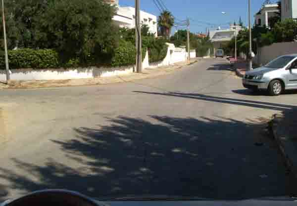
علامات الأولوية
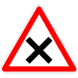
تعلن هذه العلامة عن الاقتراب من مفترق طرقات أين يجب ترك الأولوية للعربات القادمة من اليمين.
فسح المجال بالمفترق
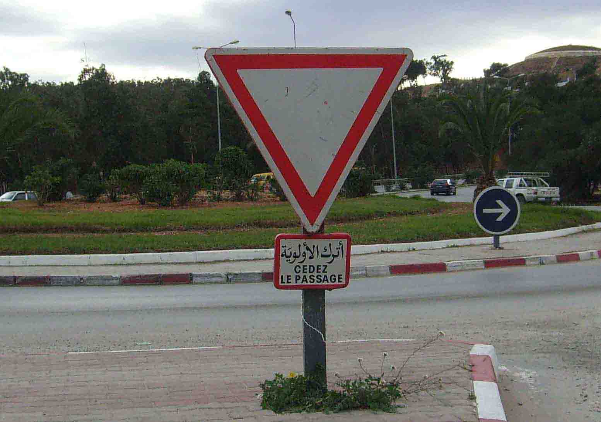
عند وجود هذه العلامة
يجب فسح المجال إلى اليسار واليمين. يكون التوقف غير إجباري إذا كان المعبد شاغرا .
علامة قف
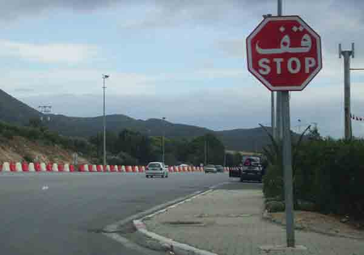
التوقف إجباري عند حد المعبد حتى لو كانت الطريق شاغرة. إذن أفسح مجال المرور إلى اليمين واليسار.
و في حالة وجود خط عرضي متواصل أبيض ، يجب التوقف عند مستوى هذا الخط
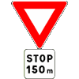
تبين هذه العلامة أنه سوف تعترضني علامة قف على بعد 150 م
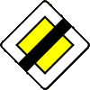
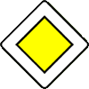
طريق ذات أولوية
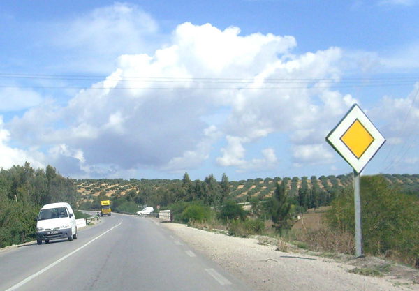
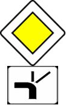
يمكن أن تكمل علامة طريق ذات أولوية بلافتة تمثل رسما للمفترق القادم
مع الإشارة بواسطة خط سميك لفروع المفترق الذي يتمتع بالأولوية.الفرع العمودي في أسفل اللافتة يمثل الطريق التي وضعت فيه العلامة.
تشير هذه العلامة بأن الطريق الذي تم تركيز فيه العلامة يتمتع بالأولوية ولكن عند المفترق القادم فقط.
القواعد الخاصة بمفترق طرقات ذي اتجاه دوراني
يوجد نوعين من مفترق الطرقات ذات الشكل الدائري :
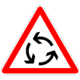
-مفترق طرقات ذي اتجاه دوراني يحتوي على علامة عمودية متقدمة تلزم السائقين على فسح المجال للعربات الآتية من جهة اليسار .
-مفترق طرقات بدون علامات تسري عليه قواعد الأولوية على اليمين.
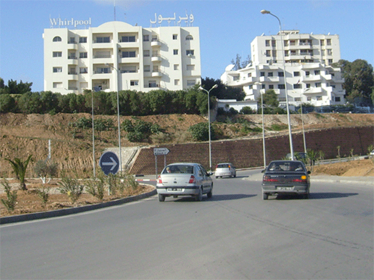
إشارات أعوان المرور
يجب على مستعملي الطريق الامتثال لإشارات الأعوان المكلفين بتنظيم حركة المرور.
تلغي إشارات هؤلاء الأعوان وتعوض المعلومات المبينة بواسطة علامات الطريق ورسوم الطريق وكذلك الأضواء .
الإشارات الضوئية
-إذا كانت الإشارات الضوئية لاتشتغل إلا بواسطة الضوء البرتقالي الرفاف , فانه يجب احترام العلامة الموجودة بعمود الأضواء .
-في صورة عدم وجود علامات ==> تطبيق الأولوية الى اليمين
في هذه الوضعية يشتغل الضوء البرتقالي الرفاف فقط ،لذا يجب احترام علامة ترك الأولوية الموجودة بعمود الأضواء و فسح مجال المرور قبل الدوران الى اليمين
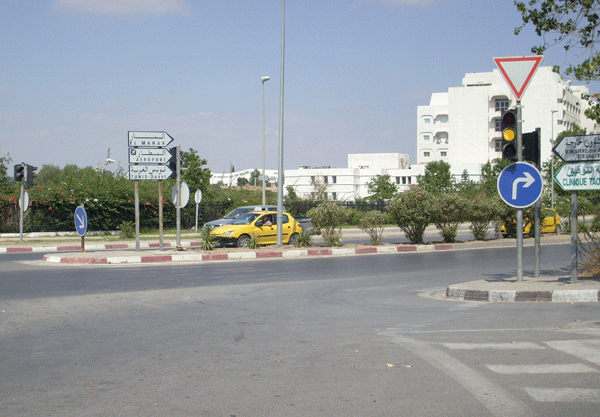